Every recording is acquired by a physical imaging system — one or two cameras, a set of illumination sources, and the optical properties of each — and umIT needs to know which setup produced a dataset in order to interpret it correctly. Rig Manager is where that setup, called a Rig, is described and kept up to date: create a Rig, correct its hardware as your setup changes, and choose the Active rig. The Optical Library underneath it holds the spectral profiles and filter sets that any Rig's cameras and illuminations can reference, so the same physical component doesn't need to be redescribed for every Rig that uses it.
Rig information lives in two places with different roles:
A folder is bound to a rig, or rebound, in DataViewer: Management > Rig > Folder Rig. AcqInfos.mat holds no rig information.
A Rig is not a Project
Rig identity is independent of Project/Subject/Session metadata. Project sessions do not store a rig; the Project Manager only displays the rig recorded in the session's Save Folder.
Exactly one rig of the library is Active; the others are Available or Archived. The Active rig is used:
It is not used by analysis functions: they read the folder rig ledger. The Rigs table marks the Active rig in its Default column, and the Overview tab shows it as Default Rig: Yes. Set Active makes the selected Available rig the Active one; the previous Active rig becomes Available.
Choose Management > Rig > Rig Manager... to administer Rigs: create new ones, correct or update their hardware, archive old configurations, choose the Active rig, and manage the Optical Library. To tell umIT which rig acquired the data of the loaded Save Folder, use Management > Rig > Folder Rig > Bind / Rebind Rig... instead (see Folder rig).
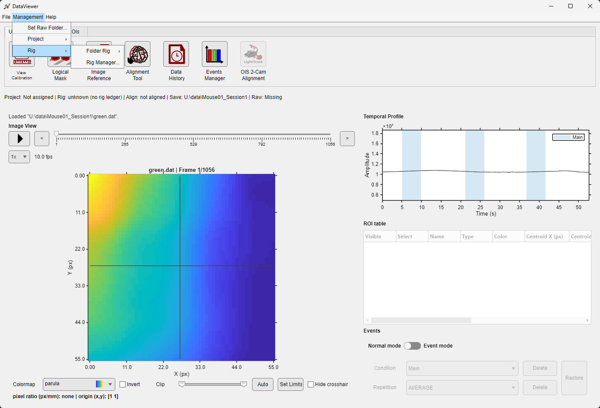
The main workspace follows the same left-list/right-detail layout as Project Manager. The top toolbar provides New Rig, Duplicate Rig, Refresh, Optical Library, Import Rig... and Export Rig... (see Moving a rig to another computer) on the left, and Validate with a Quick/Full mode selector and a compact RigID | Writable | Valid status readout on the right.
The Rigs table lists every Rig with its Default marker (the Active rig), display name, Rig ID, and state (Active, Available, Archived, or Invalid / unreadable). A Show archived Rigs checkbox controls whether archived Rigs appear in the list. Selecting a row opens that Rig below in a details panel with three tabs — Overview, Hardware, and Coregistration — and a row of contextual actions beneath the tabs: Save Details, Revert Details, Rename Rig ID..., Set Active (available for an Available rig), and Archive Rig / Restore Rig.
Built-in and newly created Rigs start with minimal information
A fresh Rig only carries the hardware identity and spectral profiles it needs to function — descriptive fields such as manufacturer, model, and serial number are left blank. Take the time to fill these in for your own equipment so each Rig's record stays meaningful once your lab has more than one.
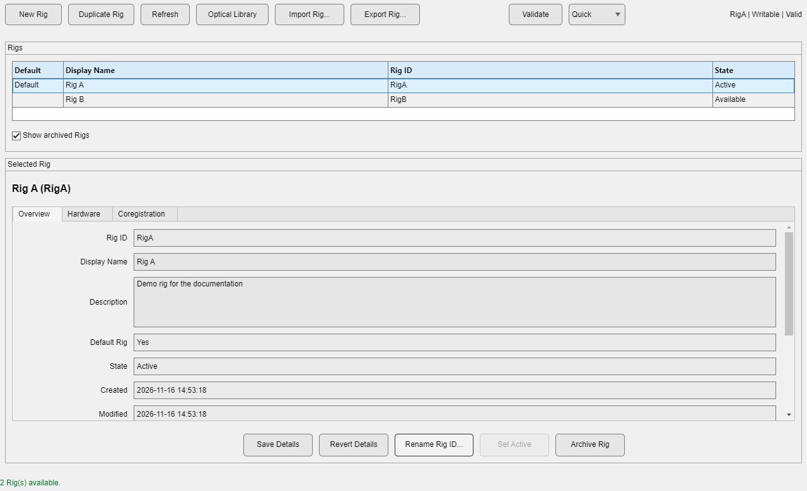
Overview exposes the descriptive fields that are safe to edit with low friction: Rig ID, Display Name, Description, Default Rig (whether this is the Active rig), State, and Created/Modified timestamps.
Hardware separates the two device categories explicitly instead of exposing a generic metadata table.
Camera 1 is always present and shown as the standard configuration: Display Name, Manufacturer, Model, Serial Number, and a required Spectral Profile with Select... and Preview actions.
Camera 2 is treated as an exceptional, opt-in configuration. For a single-camera Rig it collapses to a single Add second camera... action; the full Camera 2 field set (and a Remove Camera 2 action) only appears once a second camera has been deliberately added.
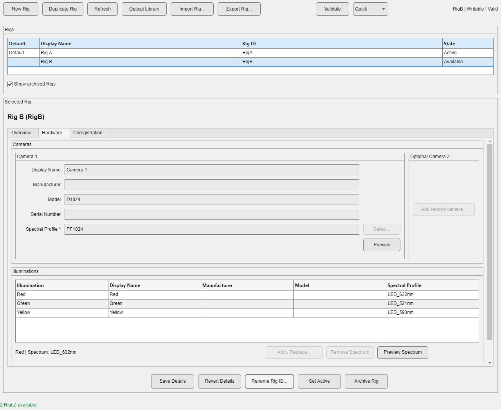
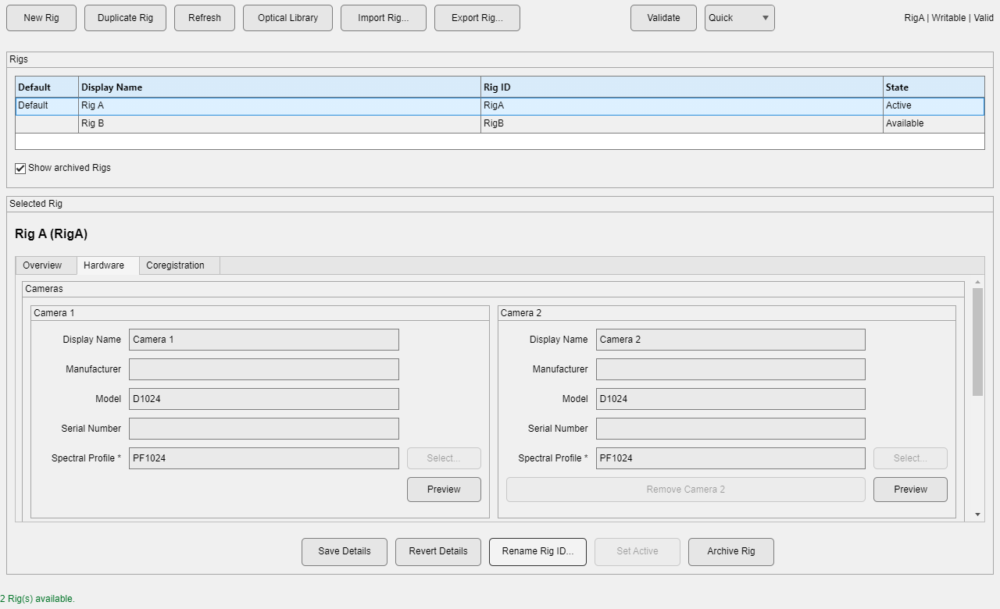
Red, Green, and Yellow illuminations are always presented as rows of one compact table (Illumination, Display Name, Manufacturer, Model, Spectral Profile) instead of three separate panels. The canonical Illumination names are read-only; descriptive fields and the spectral profile are editable while Hardware editing is active. Selecting a row shows a contextual line below the table (for example Red | Spectrum: Not selected) with Add / Replace..., Remove Spectrum, and Preview Spectrum actions. The spectral profile is never free-text; it is always chosen through the picker described under Optical Library below.
Hardware fields are read-only until Edit Configuration is pressed, which stages changes locally (the status bar reports "Hardware edits are staged until Apply."). Pressing Apply checks that every configured camera has a spectral profile, then asks whether the change is a metadata correction to this Rig or a physical hardware change that should instead Duplicate as new Rig — because changing a camera's or illumination's physical spectral profile, or adding/removing Camera 2, can change how future analysis resolves that Rig. Choosing to duplicate follows the same flow as the toolbar's Duplicate Rig action, described below.
This tab exposes the same Rig-owned camera-coregistration resources managed by the Dual-Camera Coregistration tool, but only for review and lifecycle actions — Import..., Activate, Edit Details, Archive, Restore, and Purge — not for running a new calibration.
For a single-camera Rig the tab explains that coregistration only applies to dual-camera Rigs and keeps every action disabled:
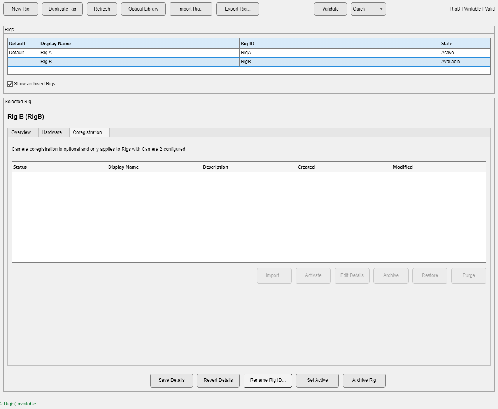
For a dual-camera Rig the same tab becomes an active resource manager:
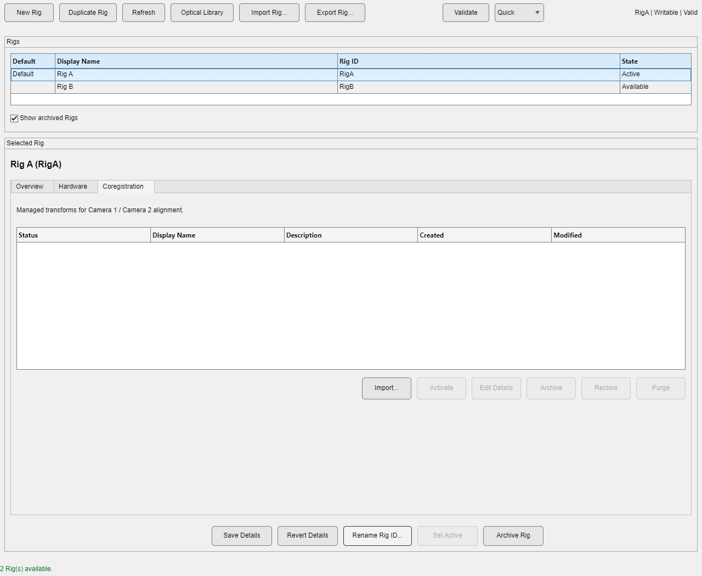
The toolbar's Optical Library action switches the whole workspace to a dedicated view for resources shared across every Rig, with a Back to Rigs action to return. A category selector switches between Illumination Spectra, Camera Spectra, Filter Spectra, and Filter Sets; a search box filters by ID, name, origin, manufacturer, or model.
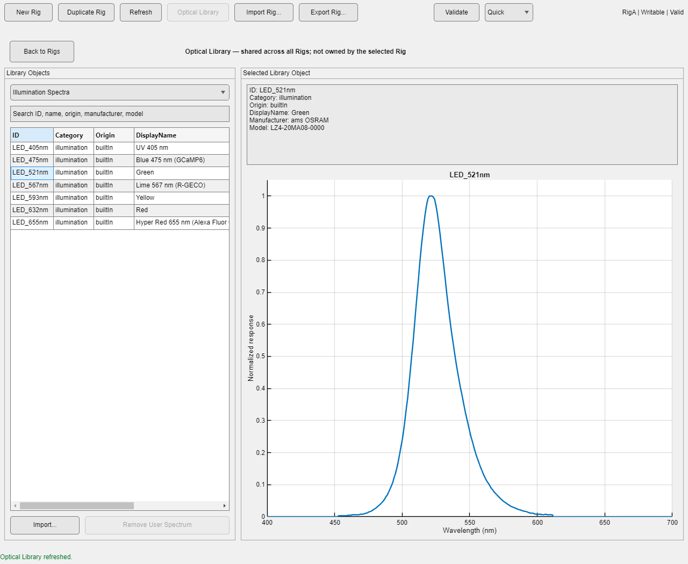
Built-in entries can never be removed. User-imported spectra can be removed with Remove User Spectrum unless another Rig still references them, in which case removal is refused and the reason is shown. Filter sets use Add New and Edit Selected instead of Import/Remove, and reject duplicate IDs.
The profiles of a filter set are fixed under its ID, because folders commit a filter set by ID and content. Edit Selected changes the display name in place. When you change an excitation or emission profile, the Rig Manager says so and offers Save as new filter set...: the Add dialog opens with the edited profiles and a free ID (for example MySet_2 for MySet), and the original filter set stays as it was. Folders that already used the original keep working.
Every spectrum in the Optical Library is stored on a fixed 1 nm grid from 400 to 700 nm and divided by its own maximum, so its highest point is always exactly 1. This applies to imported spectra (whatever units the source file used: percent, fraction, relative intensity) and to combined spectra alike.
A new spectrum can be built from existing ones to reproduce a real optical path:
The curves are multiplied wavelength by wavelength, because light has to pass every element. The product is then divided by its own maximum again, as for every spectrum. For example, take two overlapping band-pass filters that each peak at 1. Where both transmit 0.5 the product is 0.25, and if that is the highest point of the product, it is rescaled to 1. The result keeps the correct shape, narrower than either filter, but its height no longer says anything about how much light is lost. If the spectra share no usable wavelength range, the combination is refused.
To build one:
The Profile ID and the Display name are filled in automatically after every filter you add or remove: the ID joins the parts with _x_ (for example LED_567nm_x_FF0154080) and the name joins the display names with " + ". Both stay editable. Once you type your own value, that field is no longer overwritten; clear it to get the automatic value back. The order of the filters does not matter. Selecting a combined spectrum in the library lists the spectra it was made from.
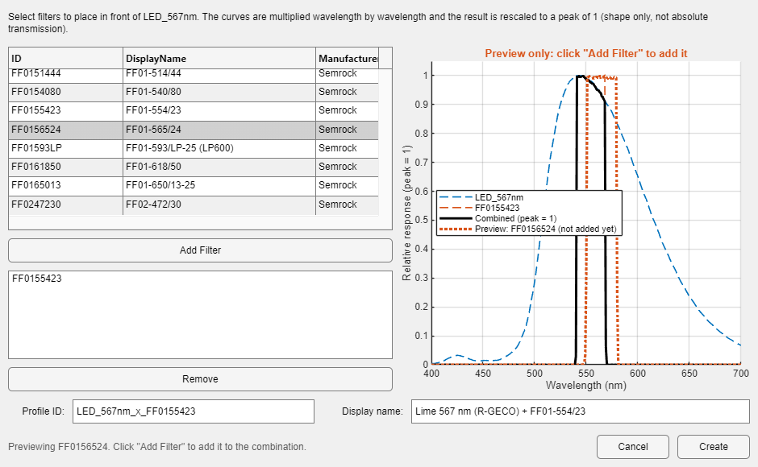
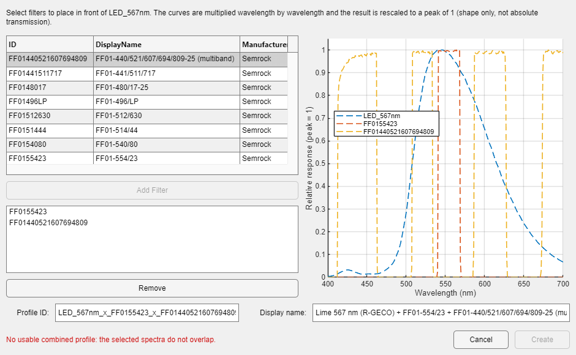
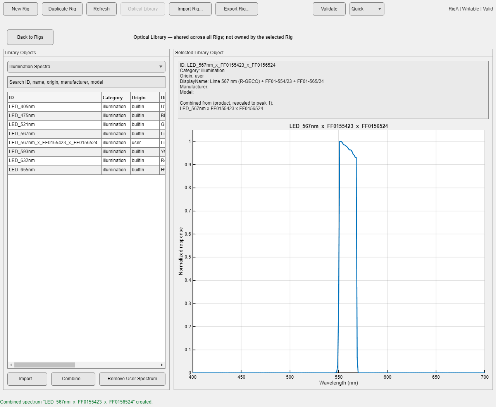
A combined spectrum remembers which spectra it was made from. It cannot be edited: to change it, remove it and create a new one. A spectrum that is part of a combined spectrum cannot be removed until the combined spectrum is removed first, and the refusal names the combined spectrum. From the MATLAB command line:
components = struct('category', {'illumination'; 'filter'}, ...
'spectrumID', {'LED_521nm'; 'FF0154080'});
UMITRigStore.createCompositeSpectrum('illumination', 'LED521_FF01540', components, ...
struct('displayName', 'Green LED + 540/80'));The Select... action next to a camera's or illumination's Spectral Profile field opens a picker rather than a plain dropdown of IDs. The picker shows the profile ID, its metadata, whether it is built-in or user-imported, a spectral curve preview, and an Import New... action so a missing spectrum can be added without leaving the Rig you are configuring.
Import New... accepts a plain text, CSV, or spreadsheet file with two numeric columns: wavelength in nanometers, and relative response (transmission, reflectance, or emission — whichever applies to that spectrum). A header row is fine; it is detected and skipped automatically. The source must cover the full 400–700 nm range with strictly increasing wavelengths and nonnegative, non-zero response values — it does not need to already be on a 1 nm grid, since it is resampled and normalized to a 0–1 peak on import.
For example, a manufacturer such as Semrock typically publishes a bandpass filter's transmission curve as a two-column CSV like this (illustrative values, not an exact reproduction of any specific datasheet):
Wavelength (nm),%Transmission 495.0,0.05 500.0,0.20 505.0,1.10 510.0,8.40 515.0,45.30 520.0,92.10 525.0,95.60 530.0,93.20 535.0,60.70 540.0,12.50 545.0,1.80
A file like this — as long as it extends out to cover 400 and 700 nm, even at near-zero transmission — imports directly as a camera, illumination, or filter spectrum.
New Rig starts a guided flow instead of an empty form:
Every camera in the definition must have a spectral profile before creation proceeds; an incomplete configuration is rejected with a specific message naming the missing camera.
Duplicate Rig (and Duplicate existing Rig from the New Rig flow) creates a new, independent Rig starting from an existing one: its descriptive metadata, cameras, and illuminations are copied over under a new Rig ID, but it never inherits the source's Active status or its camera-coregistration history. Use this — rather than editing a Rig's hardware in place — whenever a physical change to your equipment should be tracked as a new Rig instead of overwriting the history of the one you already have.
Validate re-checks the selected Rig in Quick or Full mode and updates the RigID | Writable | Valid status text. A Rig that fails validation still opens so you can see what's wrong, but every control that could change it is disabled until the problem is resolved. Archived Rigs remain visible (toggle them with Show archived Rigs) and stay read-only until restored with Restore Rig; a restored Rig comes back as Available. The Active rig is marked in the Rigs table and only changes through Set Active, never by editing Rig metadata directly.
The library always keeps one Active rig. Archiving the Active rig therefore asks first for a replacement: after the confirmation, the Replacement Active Rig dialog lists the Available rigs; the chosen one becomes Active. Cancel leaves both rigs unchanged.
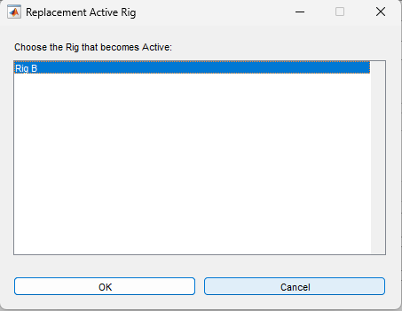
An archived rig can no longer be bound to a folder, and the Camera Coregistration tool refuses to save a calibration into it. Folders that already use it are not affected: their ledger keeps a copy of its optics.
An archived rig can be deleted for good with Delete Rig..., which appears next to Restore Rig when an archived rig is selected. The Active rig and Available rigs cannot be deleted: archive them first. The dialog explains what is lost and asks you to type the Rig ID. Export Rig first... in the same dialog saves a .umitrig copy that Import Rig... can install again.
Deleting removes the rig record and its camera-coregistration files and history. It does not remove the shared spectra and filter sets, nor the rig ledger of any folder that used the rig, so results computed from those folders stay valid. The Camera Coregistration tool cannot save a new calibration for a folder bound to a deleted rig until that rig is imported again. Deleting cannot be undone.
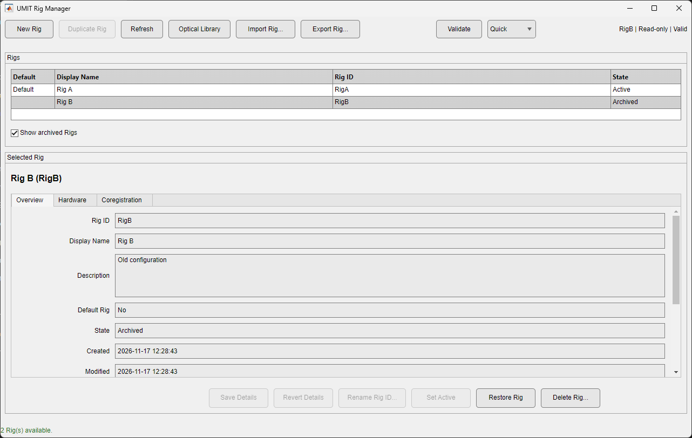
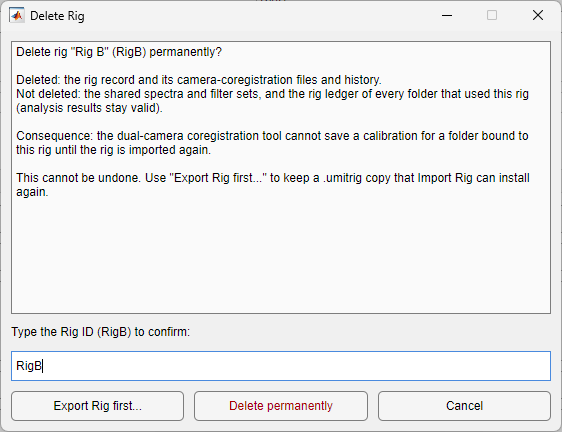
A rig can be copied to another computer as a self-contained .umitrig file. Use the Import Rig... and Export Rig... buttons in the top row of this window, next to Optical Library; they also work in the compiled application:
The file holds the rig, the spectra its cameras and illuminations use, and its camera-coregistration calibrations. The imported rig keeps its identity, so folders bound to it on the first computer show the same rig on the second. Spectra missing from the other library are added; a spectrum with the same ID but different content is refused and nothing is installed. The imported rig becomes Active only when the library has no Active rig; otherwise it is Available. Importing does not bind any folder: use Management > Rig > Folder Rig for that.
A filter set is not part of a rig: you choose it for each analysis (for example the FilterSet of HemoCompute) and each folder records the one it used. A filter set you defined yourself, or the filter spectra it uses, is therefore not on another computer unless you take it along. Choose it in the list of Export Rig...: the file then also holds the selected filter sets and the filter spectra they reference. Built-in filter sets are not listed, because every installation has them.
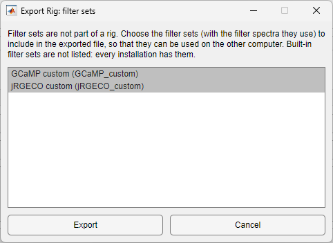
On import, a filter set that the other library does not have is added to its user library, and the status bar names it. A filter set already there with the same excitation and emission spectra is left as it is. A filter set with the same ID but different spectra is refused and nothing is installed, because the content of a filter set cannot change under its ID; rename one of them first. A file that contains filter sets can only be imported by a toolbox version that supports them; a file without filter sets can be imported by any version.
From the MATLAB command line the same operations are store.exportRig(file, 'FilterSets', {'MySet'}) and UMITRigStore.importRig(file).